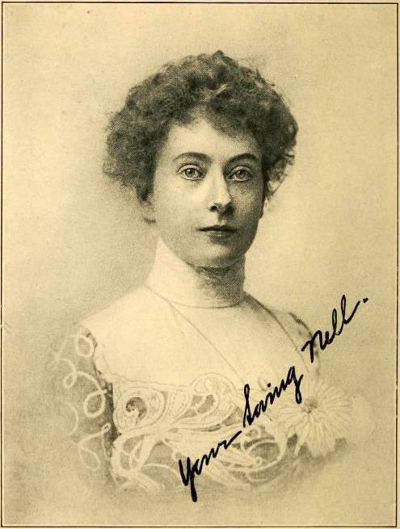

|
|
| 
Nellie STOGDILL (1868-1902) |
Nellie STOGDILL
DEATH: At the age of 34, Nellie tragically died from a gunshot wound to the head while visiting Paris, France (as per the newspaper article from the Los Angeles Herald, Volume XXX, Number 51, November 22, 1902). The cause of death was deemed an accident when a revolver was dropped onto the floor which triggered the gun to shoot a bullet. It appears her trip to Paris occurred after she and Thomas had either separated or divorced. Her Last Will was dated December 11, 1901 leaving nothing to Thomas Gore. Nellie married Thomas Sinclair GORE, son of William Sinclair GORE and Jennie BLODGETT, on 4 Jan 1905 in New York City, New York County, New York. (Thomas Sinclair GORE was born on 24 Mar 1869 in Osceola, Clarke County, Iowa, died on 16 Feb 1955 in Mexico City, D.F., Mexico and was buried in British Cemetery, Mexico City, Mexico.) |
 General Notes:
General Notes: